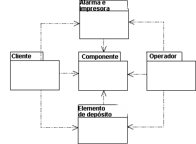

|
Manejar las dependencias de importación es un aspecto importante de la estructuración de un modelo de objeto. Un
paquete depende de otro si cualquiera de sus clases tiene relaciones que son navegables a clases del otro paquete. Para
expresar tales dependencias, utilice la dependencia de importación de un paquete al paquete del que depende.

Las dependencias entre paquetes se expresan con dependencia de importación.
Las dependencias de importación se evolucionan del modo siguiente:
-
Antes de empezar a trabajar con el modelo de objeto, realice esquematizaciones de las dependencias para utilizarlas
como modelo de objeto durante el trabajo.
-
Cuando se completa el modelo, utilícelo para mostrar las dependencias reales. Esto conlleva la actualización de las
dependencias de importación en el modelo de objeto.
-
Si ha dividido el modelo en paquetes anteriormente, utilice las dependencias de importación para mostrar dónde se
permiten las dependencias.
-
El modo en que los paquetes dependen de otros afecta a la tolerancia del sistema a los cambios. Un modelo de objeto
será más fácil de cambiar si:
-
Hace referencia a un número mínimo de clases contenidas a partir del exterior de cada paquete. Si hace referencia a
muchas clases, el paquete puede tener demasiadas responsabilidades diferentes y debe dividirse en dos.
-
Haga que cada paquete dependa de otros paquetes.
-
Pruebe cada paquete por separado. Esto significa que debe poder probar un paquete simulando el paquete del que
depende. No debe necesitar otros paquetes para estar completamente o casi totalmente implementado. Si puede probar
un paquete por separado, el desarrollo del sistema y el mantenimiento de cada paquete será más sencillo.
-
Coloque los componentes generales del modelo de objeto en paquetes separados de que dependen otros paquetes. Si
existe tal paquete, preste mucha atención al manejo del release, ya que muchos componentes del sistema pueden verse
afectados por los cambios del paquete.
Ejemplo
Imagine que encuentra algo en común entre las clases Panel de cliente y Panel de operador en la máquina
de reciclaje. Asigna estos servicios generales a una nueva clase, Panel que coloca en un nuevo paquete,
Paneles. Las otras dos clases pueden hacer referencia a esta clase para utilizar servicios generales. Como las
clases pertenecen a dos paquetes separados, los dos paquetes dependerán del nuevo paquete. Esta eliminación de
redundancia implica que los cambios en la funcionalidad común sólo necesitan realizarse en un lugar.
|